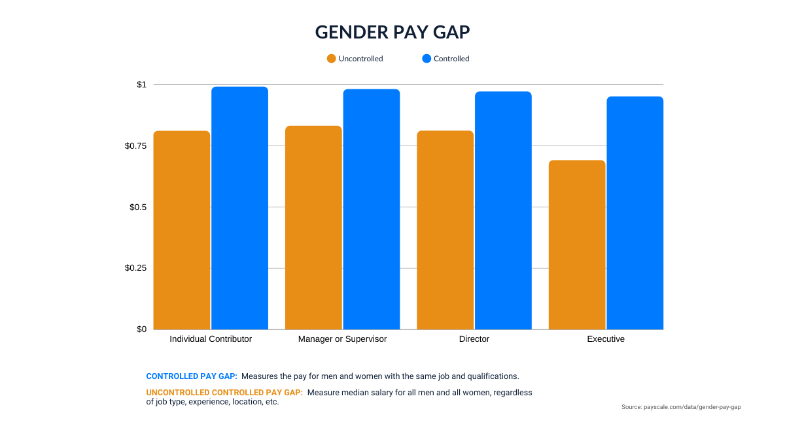
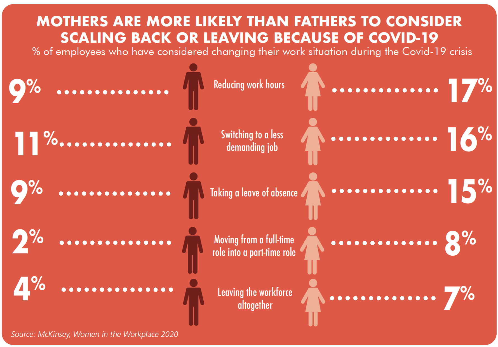

Women have proved their presence and their value in the workplace in almost every industry and have shown how smart and technically competent they are in comparison to their male counterparts. Despite this, women still face obstacles in their workplace and are treated unequally to men.
In fact, women make up 50% of the global workforce, yet make less than their male counterparts in every country on Earth. In many industries, female workers are systematically denied their rights to regular pay and regular working hours; equal pay for equal work; permanent contracts; safe and non-hazardous work environments; and freedom of association. Egregious abuses, including sexual violence, harassment and forced pregnancy tests, are all too common.
Fortunately, there are some organizations and campaigns that support women and want their voice to be heard as much as men’s voice is heard now. ILRF is committed to helping women being treated with fairness in their workplace. With the Rights for Working Women Campaign (RFWW), ILRF has been at the forefront of securing fair treatment and wages for women in the global workplace.
According to the “Women In the Workplace” 2018 report, representation of women of color is the least causing them to stay behind white men, men of color, and white women. Women of color comprise only 17% of entry-level roles and 4% of C-Suite positions. This underrepresentation gets worse in senior management positions. Only 22% of C-suite executives are women. Compared to 62% of men in managerial positions, only 38% of women are promoted to be managers. What’s interesting to see is that the number of women and men leaving their companies is almost the same. Therefore, attrition can’t be blamed for this inequality and misogyny.
A study has also shown that women earn 77.9 cents for every dollar earned by men. Research by Payscale says that in 2018, the median salary for women is roughly 22 percent lower than the median salary for men. In India, too, the fight for equal wages continues. The Labour Bureau in India has found that in rural areas in the agricultural sector, the daily wage for men is ₹264.05 and ₹205.32 for women. In non-agricultural sects, the average daily wage rate for men is ₹271.17, while for women it is ₹205.90.
The Guardian reports that over 50,000 women lose their jobs over maternity discrimination. A type of employment discrimination, pregnancy discrimination, refers to when women in the workplace are fired, not hired, or discriminated against their pregnancy. Women should not receive offensive comments by senior officials, clients, peers, and customers regarding their physical and medical condition and they should definitely not be oppressed to take time off or change their working hours. It is unbelievable how many times women have tried to speak up and stand up for their rights but men continue to discriminate them.
Under the difficult circumstances that we have been living in the past two years many employees have been challenged to succeed in their workplace.
Especially women have been negatively impacted as the pandemic has intensified challenges that they already faced. Working mothers have always worked a “double shift”—a full day of work, followed by hours spent caring for children and doing household labour. Now the supports that made this possible—including school and childcare—have been upended.
As a result of these dynamics, more than one in four women are contemplating what many would have considered unthinkable just six months ago: downshifting their careers or leaving the workforce completely. Companies risk losing women in leadership—and future women leaders—and unwinding years of painstaking progress toward gender diversity.
